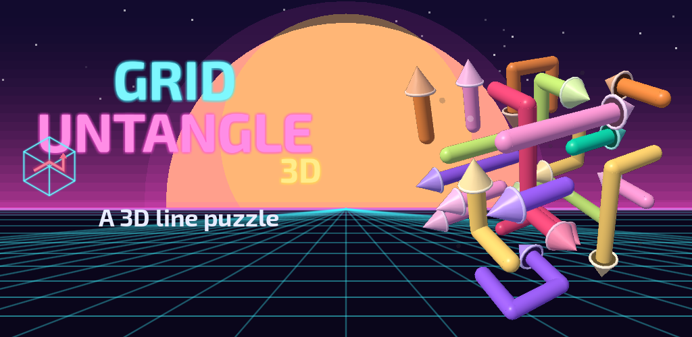
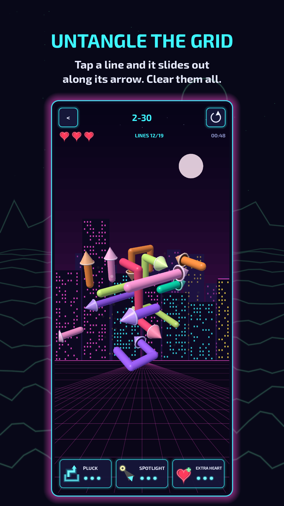
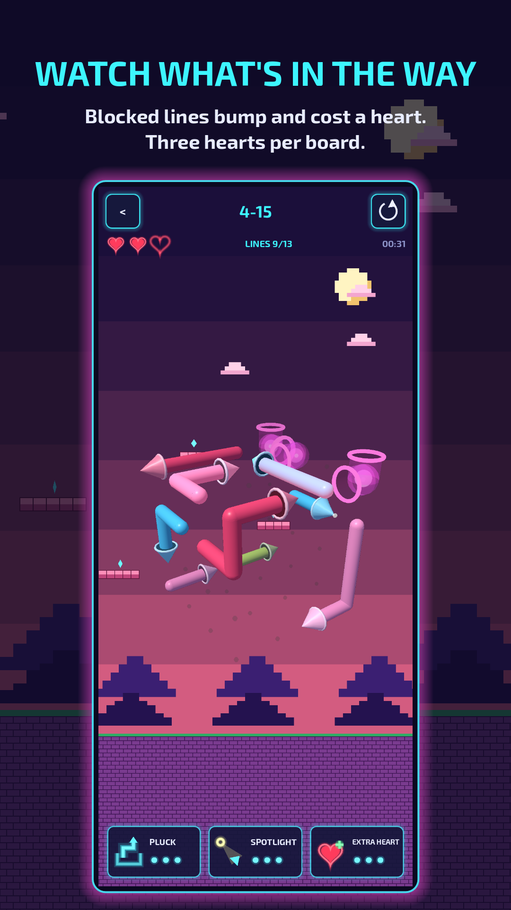
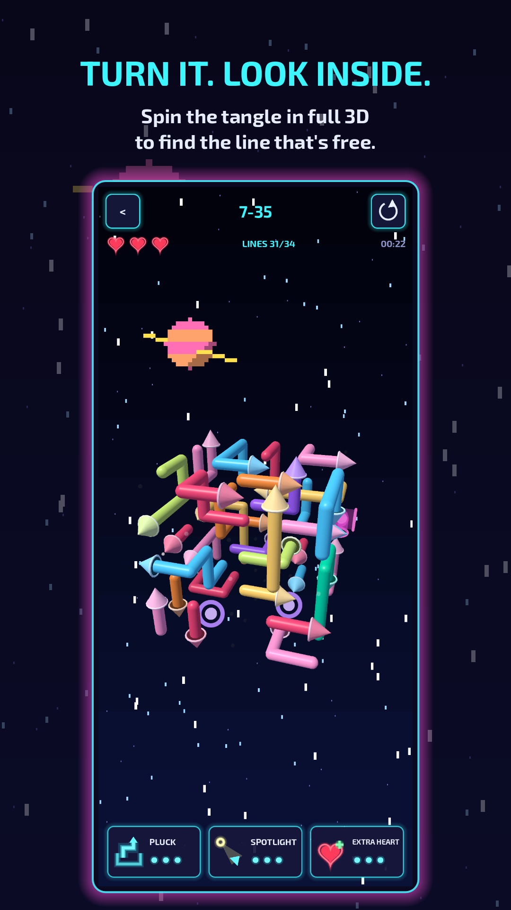
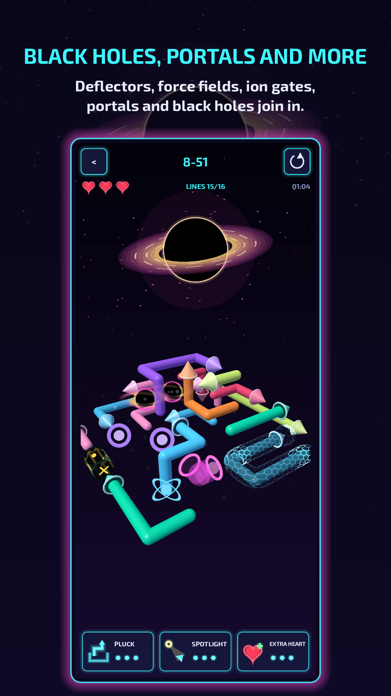
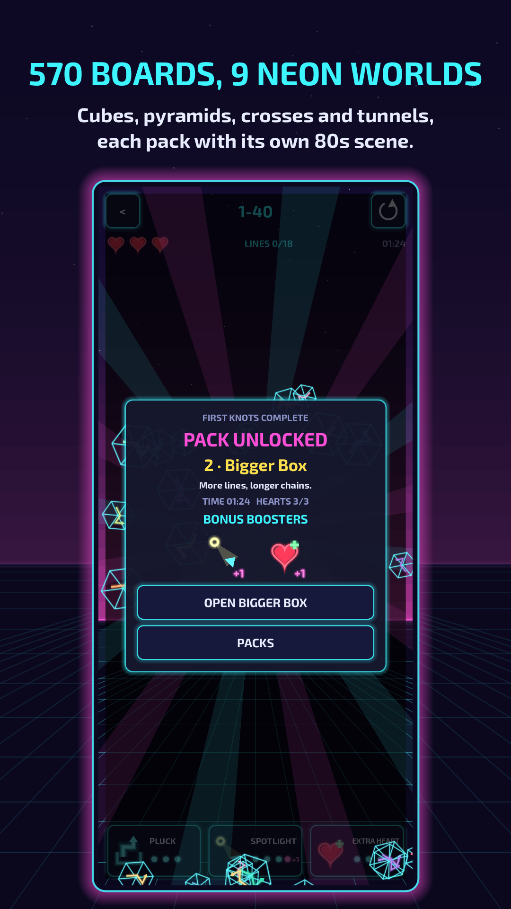
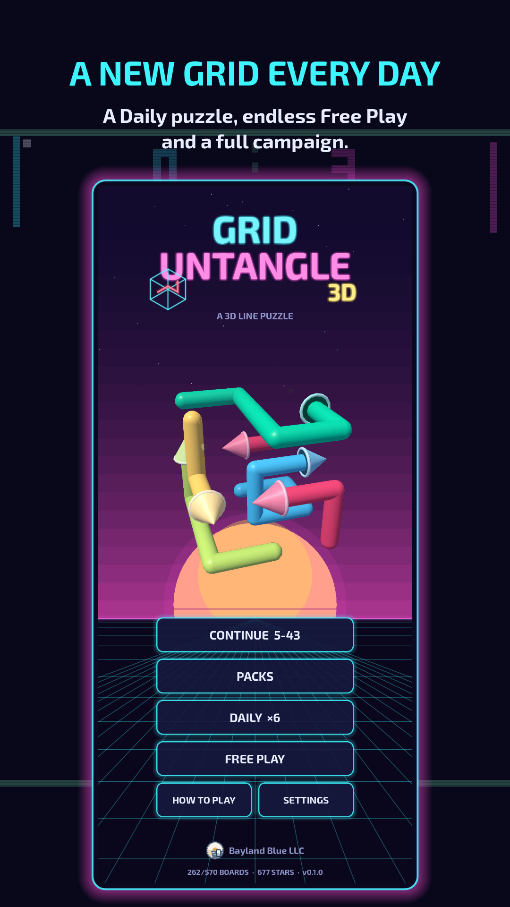

Grid Untangle 3D

Untangle a glowing 3D grid, one line at a time. Spin the tangle in full 3D, look inside, and find the line that's free to go.






How it works
Every line has an arrow on its head. Tap a line and it slides out of the grid along its arrow, the rest of the line following the head like a snake.
- If another line is in the way, it bumps and you lose a heart. You have three hearts per board.
- Drag to turn the grid and look inside, pinch to zoom, and double-tap empty space to reset the view.
- Clear every line to win. Finish with all three hearts for three stars.
570 boards in nine packs
Each pack brings something new, and the boards grow from a small cube to big pyramids, crosses and tunnels. Each pack also has its own animated 1980s scene behind the grid.
| Pack | Boards | New |
|---|---|---|
| First Knots | 1–40 | Lines and arrows |
| Bigger Box | 41–100 | More lines, longer chains |
| Odd Shapes | 101–160 | Pyramids, crosses and tunnels |
| Bends | 161–220 | Deflectors |
| Force Field | 221–290 | Force fields |
| Ion Gates | 291–360 | Ion gates |
| Warp | 361–430 | Portals |
| Event Horizon | 431–500 | Black holes |
| Grand Tangle | 501–570 | Everything at once |
Each pack opens when you finish the one before it, and unlocking a new pack awards bonus boosters.
Obstacles
- Deflectors: glass elbow tubes that turn a line round a corner.
- Force fields: a line held in a shimmering field can't move until its generator line, the one with the glowing core, has left the grid.
- Ion gates: spinning cylinders that let lines through only the way their arrows point, until a line passes the right way and burns them out.
- Portals: a line sliding into one comes out of its twin.
- Black holes: they swallow any line that slides into them, so a line deep inside the tangle can be the first one out.
Later boards combine them: one line can bend round a deflector, warp through a portal and fall into a black hole.
Daily puzzle and Free Play
A new grid every day, the same for every player, easiest on Monday and hardest on Sunday. Keep your streak going: reaching 5, 10, 25, 50, 75 or 100 days in a row (and every 25 after that) sets off a fanfare. Or play endless fresh grids in Free Play at four difficulties.
Help when you're stuck
Pluck lifts any line straight out, blocked or not. Spotlight turns the grid to look down a line that can leave right now and lights it up. Extra Heart gives back a lost heart. Each holds three charges, a used charge comes back 12 hours later, and you can watch an optional ad to get one back sooner.
Play your way
- Short How to Play lessons, and a card that explains each new obstacle the first time you meet it
- Color symbols on force fields, generators and portals, for players who find some colors hard to tell apart
- Nine synthwave and 8-bit scenes, by pack or pinned to a favorite, and a soundtrack to match
- Turn the board's animations off if you prefer a still board
- In 11 languages: English, Spanish, Portuguese, French, German, Italian, Russian, Japanese, Korean, Chinese and Turkish
Ads
The game is free to play, with a banner ad below the board and a short ad between boards after every five minutes of play (none during your first ten boards). A one-time Remove Ads purchase in Settings turns off the banner and the ads between boards for good, makes boosters recharge in 2 hours instead of 12, and opens Custom Mix in Free Play, where you choose which obstacles the boards use. Ads that restore a booster charge only play when you choose to watch one.
Support
Questions, feedback or bug reports: baylandblue@gmail.com